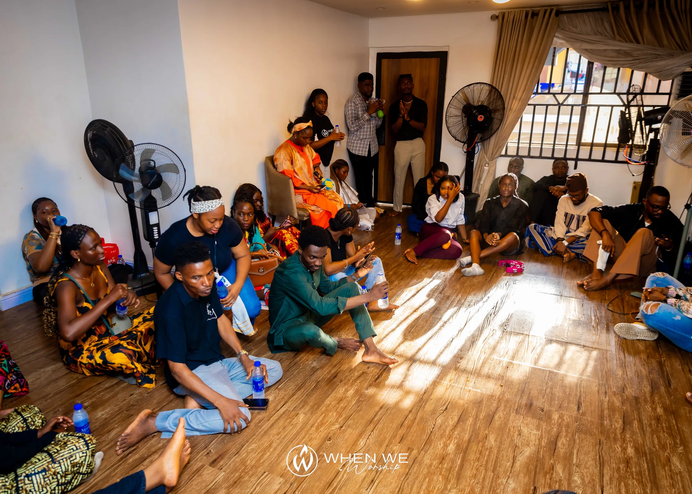
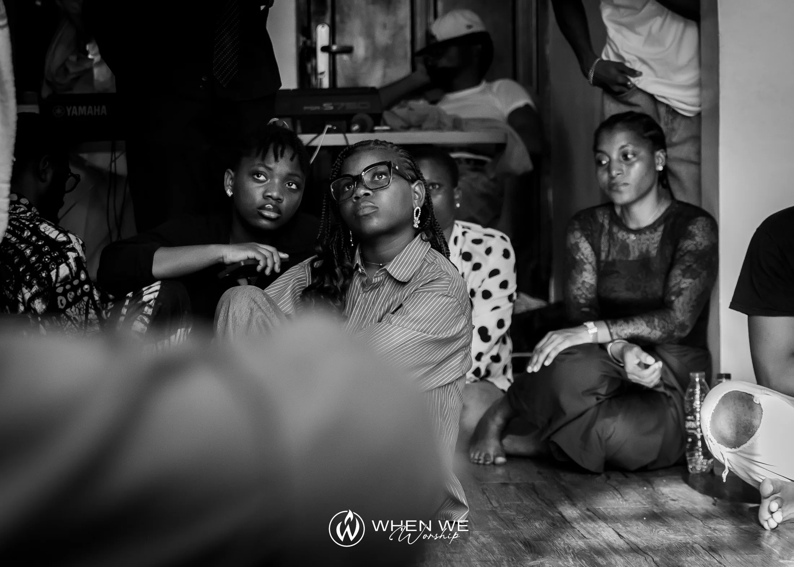

Presence
We make room for sincere worship and attentiveness to God.
WHO WE ARE
A simple room. Open hearts. Worship that makes space for the presence of God.
OUR STORY
Parlor Worship exists around a simple conviction: people need spaces where they can slow down, worship Jesus sincerely, hear the Word and know one another beyond a crowd.
Parlor Worship is that space. It is intentionally intimate, intentionally relational and centered on Jesus.
We gather in living rooms and familiar spaces because faith is not meant to live only on a stage. We want worship to move into everyday life.

OUR VALUES
We make room for sincere worship and attentiveness to God.
We value relationships that continue after the gathering ends.
We remain grounded in Scripture and the person of Jesus.
We create spaces where people can arrive, breathe and belong.
We choose honest worship over polished appearances.
We give our time, gifts and attention to serve one another.

THE PEOPLE BEHIND PARLOR WORSHIP
From worship leaders to hosts and volunteers, Parlor Worship is made possible by people who believe that a small gathering can carry a big invitation of the Holy Spirit.
Get Involved